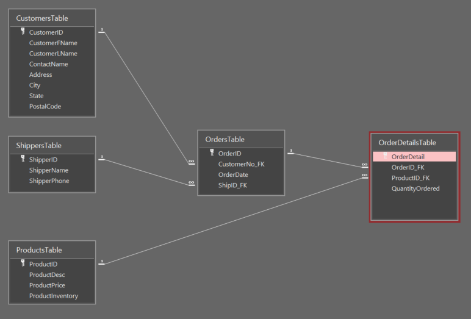

Database Management • SQL • Microsoft Access
Schmetsy Database
Designing, constructing, and populating a relational database for a hypothetical sports merchandise business.
Project Summary
For my Fundamentals of Database Management Systems course at Saint Joseph's University, I developed Schmetsy, a hypothetical sports merchandise database using Microsoft Access and SQL.
The project involved creating five relational tables, defining primary and foreign keys, populating records, and updating existing data using SQL statements.
The finished database organizes information about customers, merchandise, orders, individual order details, and shipping providers.
Project Objective
How can a relational database be designed and implemented to organize customer, product, order, and shipping information while maintaining consistent relationships between records?
Database Architecture
The database consists of five tables connected through four one-to-many relationships. Primary keys uniquely identify records, while foreign keys associate related information across tables.

Database Tools
- CustomersTable: Customer names, contact identifiers, and fictional address information.
- ProductsTable: Merchandise descriptions, prices, and inventory quantities.
- ShippersTable: Shipping provider names and fictional contact information.
- OrdersTable: Order dates and associated customer and shipper identifiers.
- OrderDetailsTable: Individual products and quantities associated with each order.
Table Relationships
- Customers → Orders
- Shippers → Orders
- Orders → Order Details
- Products → Order Details
SQL Implementation
I wrote SQL statements to define the database structure, insert records into the tables, and correct data-entry errors.
The following examples are taken from the SQL queries used in the project.
1. Creating Relational Tables
The CREATE TABLE statement below defines the Orders table, including its primary key, customer reference, shipping provider reference, and order date.
CREATE TABLE OrdersTable
(
OrderID AUTOINCREMENT PRIMARY KEY,
CustomerNo_FK INTEGER REFERENCES CustomersTable(CustomerID),
OrderDate DATETIME,
ShipID_FK INTEGER REFERENCES ShippersTable(ShipperID)
);2. Populating Database Records
INSERT INTO statements were used to populate the database. This example adds a product and quantity to an order in the OrderDetails table.
INSERT INTO OrderDetailsTable (OrderID_FK, ProductID_FK, QuantityOrdered)
VALUES (6, 6, 15);3. Updating Existing Records
UPDATE statements were used to correct existing records. This example modifies an order data using a specific order ID.
UPDATE OrdersTable
SET OrderDate = #2/4/2020#
WHERE OrderID = 3;Skills Demonstrated
- Relational Database Design: Structuring information across multiple interconnected tables.
- SQL Programming: Writing data definition and data manipulation statements.
- Data Integrity: Establishing primary and foreign key relationships.
- Database Management: Creating, populating, and maintaining records in Microsoft Access.
Explore the Project
Download the completed Microsoft Access database or review the original SQL queries used to construct and populate it.
Note: This is a hypothetical academic database. Some customer and shipping provider names refer to real people or organizations, but associated contact information, transactions, and business records are fictional.